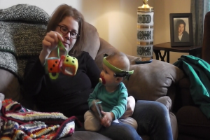

Research Methods
Home Visits
We're interested not only in what babies know when they come into the lab, but also what their home environment is like, from their perspective. To look at this, we go to families' homes, and put small light-weight cameras on a headband or hat, and record an hour of what infants are seeing and hearing every month.
There are two little cameras, one pointed slightly up, and one pointed slightly down, so that we can ensure we capture what babies see when they have something close to them, and when they look up at caregivers. A third camcorder records the global properties of the environment.
We also record all the audio input babies get in a typical day once a month using small recording devices (LENA recorders). This gives us a longer-and probably more typical--recording to figure things out about the language infants are hearing.